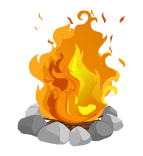

Energy

The simplest definition of energy is "the ability to do work". Energy is how things change and move. It's everywhere around us and takes all sorts of forms. It takes energy to cook food, to drive to school, and to jump in the air.
Units of Measure for Energy
In physics, the standard unit of measure for energy is the joule which is abbreviated as J. There are other units of measure for energy that are used throughout the world including kilowatt-hours, calories, newton-meters, therms, and foot-pounds.Law of Conservation of Energy
This law states that energy is never created or destroyed, it is only changed from one state to another. One example is the chemical energy in food that we turn into kinetic energy when we move.Forms of Energy
Energy can take a number of different forms. Here are some examples:
Chemical
Chemical energy comes from atoms and molecules and how they interact. Like Gasoline.Electrical
Electrical energy is generated by the movement of electrons.Gravitational
Large objects such as the Earth and the Sun create gravity and gravitational energy.Heat
 Heat energy is also called thermal energy. It comes from molecules of different temperatures interacting.Light
Light is called radiant energy. The Earth gets a lot of its energy from the light of the Sun.Motion
Anything that is moving has energy. This is also called kinetic energy.Nuclear
 Huge amounts of nuclear energy can be generated by splitting atoms.
Huge amounts of nuclear energy can be generated by splitting atoms.
Potential
Potential energy is energy that is stored. One example of this is a spring that is pressed all the way down. Another example is a book sitting high on a shelf.Renewable and
Nonrenewable
As humans we use a lot of energy to drive our cars, heat and cool our houses, watch TV, and more. This energy comes from a variety of places and in a number of forms. Conservationists classify the energy we use into two types: renewable and nonrenewable. Nonrenewable energy uses up resources that we cannot recreate. Some examples of this are gas to run our car and coal burned in power plants. Once they are used, they are gone forever. A renewable energy source is one that can be replenished. Examples of this include hydropower from turbines in a dam, wind power from windmills, and solar power from the sun.
The more renewable power we use the better for our planet and for future generations as they won't run out of resources someday.